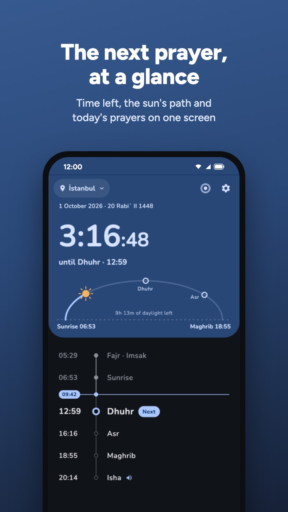
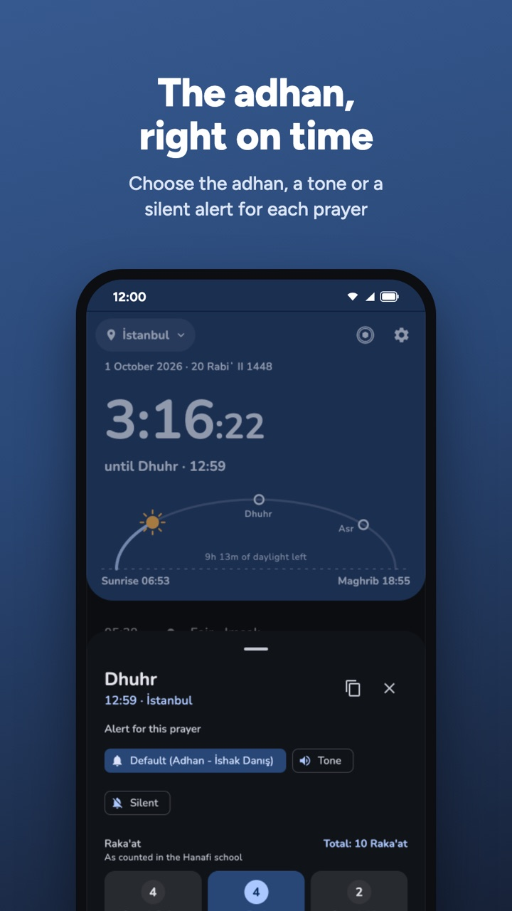
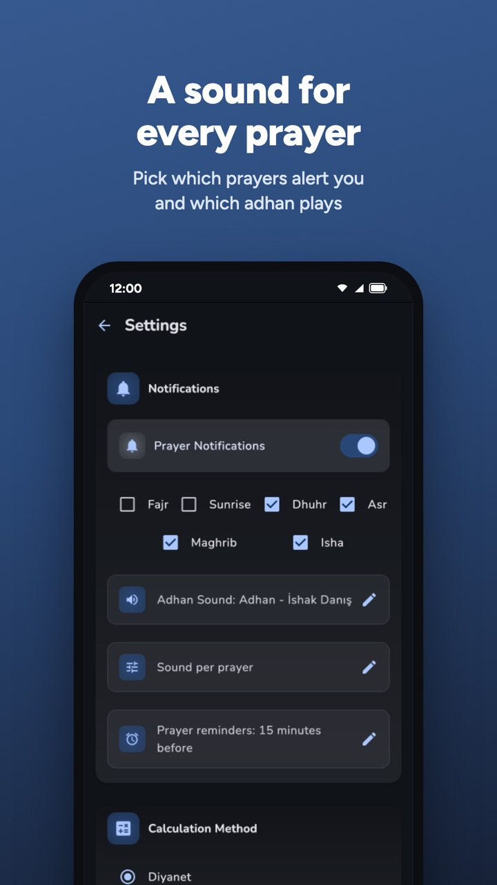
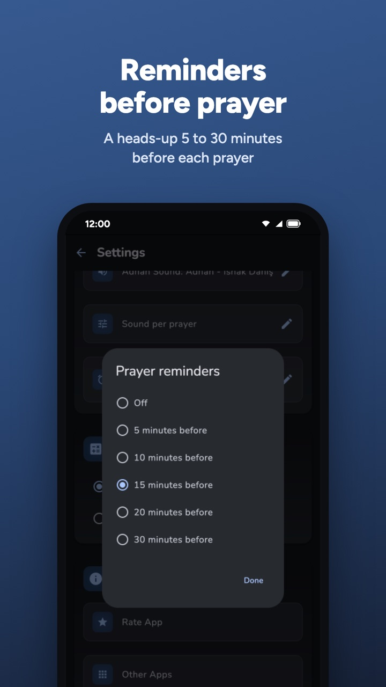
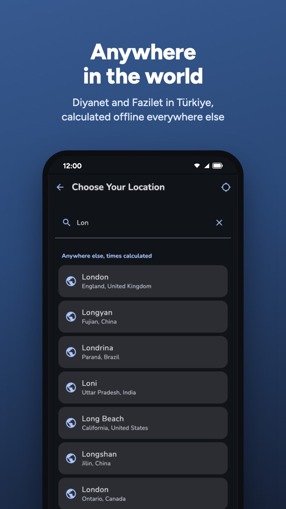
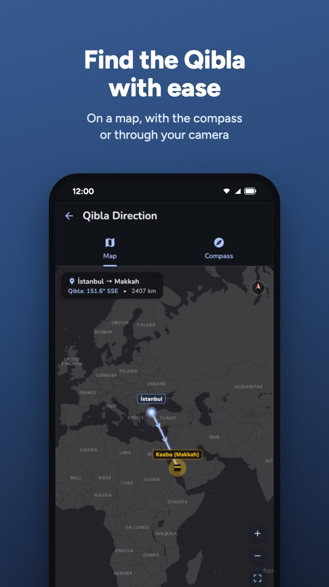
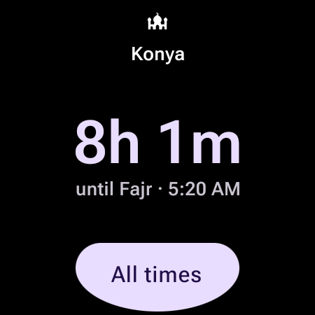
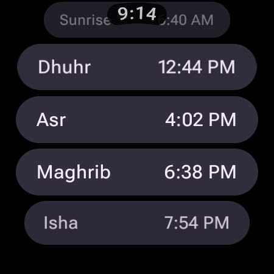

Prayer times anywhere
Official Diyanet and Fazilet calendars for every city in Türkiye. Everywhere else, times use the country's own calculation method and are worked out offline.
Today's prayers on one clear screen, the adhan when each one begins, and the way to the Kaaba wherever you are.






Official Diyanet and Fazilet calendars for every city in Türkiye. Everywhere else, times use the country's own calculation method and are worked out offline.
The adhan, a simple tone or a silent alert as each prayer begins, with a separate sound per prayer or your own audio file.
A heads-up 5 to 30 minutes before each prayer, and guidance so battery saving doesn't delay your alerts.
Time left until the next prayer, where the sun and moon are, midnight and the last third of the night, with Hijri and Gregorian dates.
A map with the direction and distance to the Kaaba, a compass, and augmented reality through your camera.
A home screen widget, prayer times in the notification bar, and a dark theme that's easy on the eyes at Fajr.


Wear OS
A tile with the next prayer and the time left, a complication for your watch face, and today's prayer times on the watch, synced from the phone app.